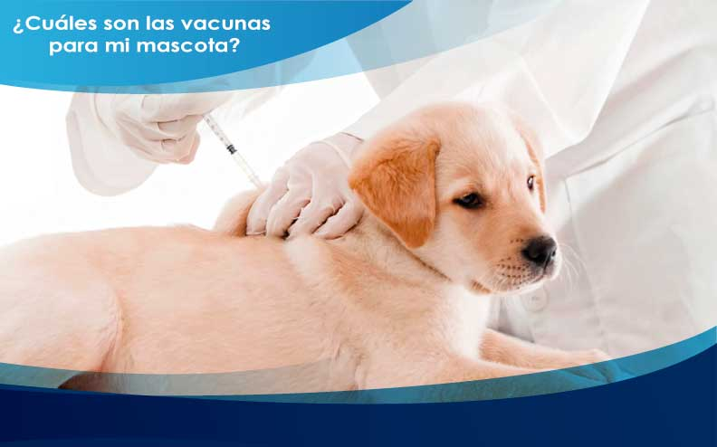
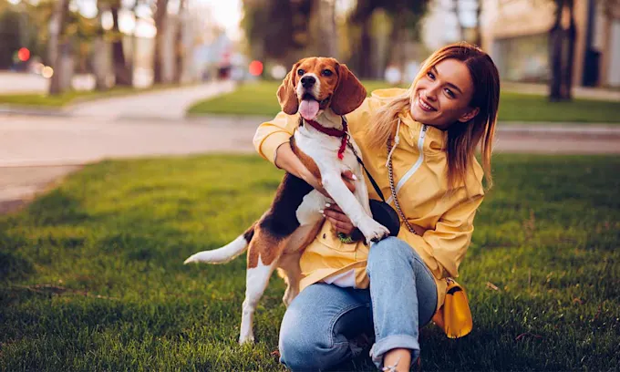

Actualmente las personas piensan que tener una mascota es como tener un objeto o algo que no le deben tener un cuidado o atencion, y es todo lo contrario. tener una mascota es una responsabilidad grande para una persona, algunas personas comentan que es lo mismo que como tener un "hijo" tal vez pueda ser un poco exagerado pero si requieren mucha atencion. Si no te sientes capaz de tener esta responsabilidad, te aconsejo que no tengas mascotas, ya que es un sufrimiento para ellos, recordemos que también son seres vivos como nosotros, debemos tener empatía y humanidad.
Debemos acudir a un veterinario para colocarles las vacunas que necesita, ya que requieren la producción de anticuerpos para asi poder evitar enfermedades. Las vacunas más comunes son:
Si tu mascota ya es adulta debes llevarlo anualmente al veterinario, ya que estas deben ser vacunadas para las enfermedades más comunes
Es muy importante tener cuidado con esto ya que las mascotas tienden a tener parasitos internos.
Si tu mascota aún es cachorro lo debes de desparacitar antes de los 4 meses. El tipo de desparasitación varia.
Es recomendable dar el primer baño a tu mascota a partir de los 3 meses en adelante, para evitar un resfriado, ya con su jabón especial. Además debemos tener en cuenta que no solo debemos mantener con un buen higiene a nuestra mascota, también hay que asear el espacio dentro de nuestra casa, por donde pasa nuestra mascota y más que todo donde duerme, para así evitar parásitos e infecciones tanto para el dueño y su mascota.
Te aseguro que si tienes presente todos estos cuidados no se sentiran estresados y van a estar libres de cualquier enfermedad.
Tus mascotas necesitan de una alimentación parecida a la de una persona, también necesitan de los nutrientes necesarios para poder estar saludables (proteinas,grasas,carbohidratos,vitaminas). Son escenciales, pero no en exceso, lo mas importante son las proteinas, ya que con estas se mantienen fuertes y saludables. Todas estas las podemos encontrar en lo que son las carnes, arroz, frutas, pescado y entre otros alimentos que sean ricos en proteinas y vitaminas.
Sabemos que existe alimentos para mascotas, pero estos no contienen lo que necesitan para estar saludables, ya que es una mezcla de alimentos no procesados y hay casos en los que este tipo de alimentos ocasionan alergias y enfermedades. Si vas a darle este tipo de alimetos a tus mascotas debes de combinar este con los otros alimentos nombrados. Estos no lo debes dar en exceso ya que al paso del tiempo puede tener obesidad y tener enfermedades en el corazón. También debe de tener una excelente hidratación, para esto hay que prevenir que tome agua de sitios como charcos o estanques, y colocarles su respectivo recipente o bebederos con agua limpia, esta debe ser cambiada unas 2 a 3 veces diarias.
Aca dejare el link de una calculadora que te indica cuanto alimento debe consumir diariamente tu mascota según su edad, peso, tipo de animal y además debes colocar si presenta actividad física. Calculadora de alimentación para mascotas
Es importante que desde cachorro tu mascota socialice con personas y otros animales, para crear una buena convivencia, ya que si lo mantienes aislado y ya sea adulto y quieras salir de paseo, para el todo eso va a ser desconocido y puede actuar de diferentes maneras, podria ser de una manera agresiva o tendría miedo.
Hay personas que estan equivocadas que si ellos tienen a su perro encadenado seria un buen perro guardián, en si lo que están haciendo es que este sufra, y pueda tener lesiones en su piel, infecciones ya que defecan y comen ahi mismo sin tener acceso a otro lugar, esto puede ocasionar la muerte. Este puede convertirse en un perro agresivo por causa de la misma frustración de no poder explorar su ambiente y sin poder tener conocimientos sobre lo que es en si una amenaza real.
También hay que educarlo desde pequeño en su comportamiento dentro de su hogar, para que no rompa cosas, esté atento a su llamado, que sea aseado y enseñarle donde puede hacer sus necesidades para así convertirlo en un habito. Educa a tu mascota y conócela
